247 Ingredients
- coffee
- lentils
- dark chocolate
- beluga lentils
- 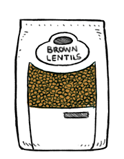brown lentils
- 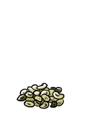shelled hemp seeds
- 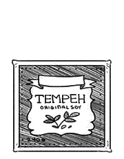tempeh
- 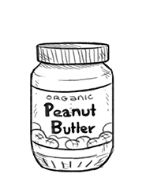peanut butter
- peanuts
- soy beans
- 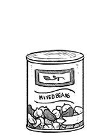beans
- green beans
- edamame
- 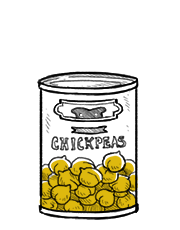chickpeas
- aquafaba
- 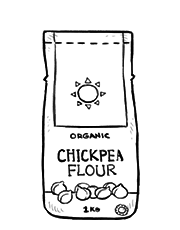chickpea flour
- 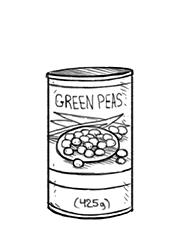green peas
- green cabbage
- red cabbage
- 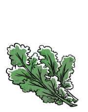kale
- 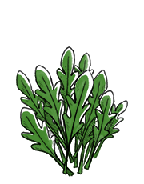arugula
- cauliflower
- white cauliflower
- purple cauliflower
- brussel sprouts
- daikon
- arame
- seaweed
- mushroom
- wakame
- 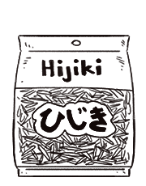dried hijiki
- 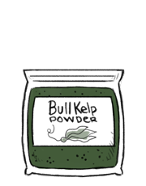bull kelp powder
- nori
- 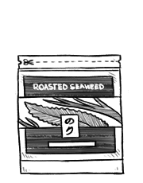nori sheets
- shiitake
 crimini
crimini- 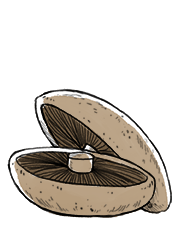portobello
- shimeji
- button mushrooms
- flax seeds
 flax seed eggs
flax seed eggs- sunflower seeds
- pumpkin seeds
- 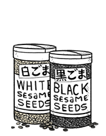sesame seeds
- 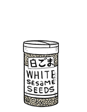white sesame seeds
- 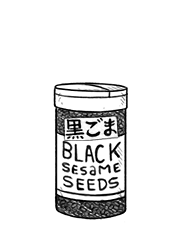black sesame seeds
- 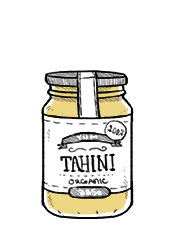tahini
- pomegranate seeds
- 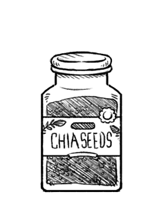chia seeds
- nagaimo
- carrots
- small heirloom tomatoes
- heirloom carrots
 ginger root
ginger root- 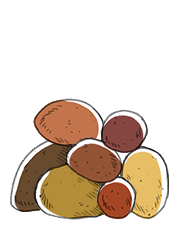potatoes
- 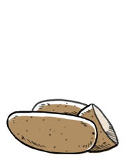russet potatoes
- sweet potatoes
- bok choy
- beets
- golden beets
- red beets
- cassava
 garlic
garlic garlic powder
garlic powder- onion
 red onion
red onion- onion powder
- yellow onion
- cucumber
- persian cucumbers
 eggplant
eggplant- zucchini
- chives
- peppers
- red bell peppers
- tomato paste
- avocado
- 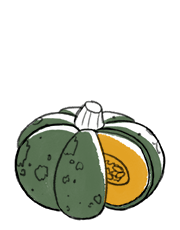pumpkin
- olives
- green olives
- black olives
- 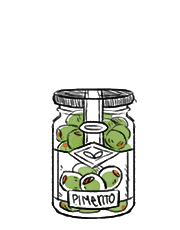pimento olives
- acorn squash
- 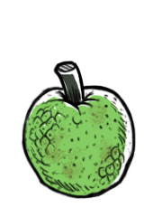breadfruit
- scallions
- spinach
- alfalfa sprouts
- dried raisins
- blackberries
- dried cranberries
- 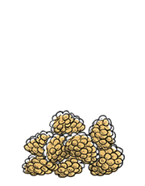dried white mulberries
- 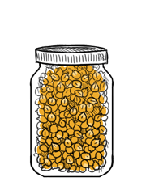dry corn kernels
- pandanus fruit
- banana
- apple
- lemon
- lemon zest
- lemon juice
- orange
- pears
- bartlett pear
- 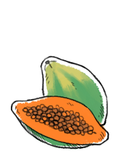papaya
- pomegranate
- mango
- hachiya persimmon
- 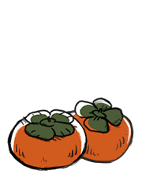persimmon
- dates
- deglet noor dates
- date caramel
- 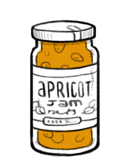apricot jam
- 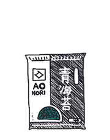ao nori
- kanten powder
- turmeric root
- ground turmeric
- cinnamon
- rosemary
- basil
- 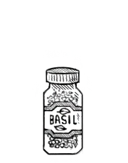dried basil
- wasabi root
- 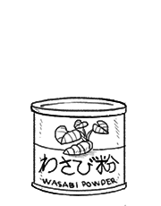wasabi powder
- 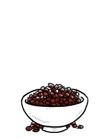sichuan peppercorns
- coriander
- 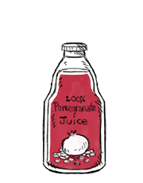pomegranate juice
- 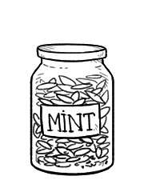mint
- peppermint
- cocoa beans
- cocoa powder
 granulated sugar
granulated sugar- cayenne pepper
- cayenne pepper powder
- anise seeds
- 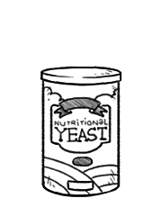nutritional yeast
 vanilla
vanilla vanilla extract
vanilla extract- 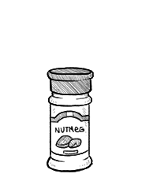nutmeg
- 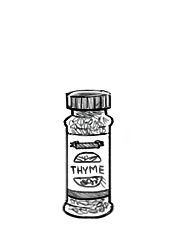thyme
- 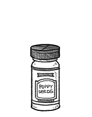poppy seeds
- paprika
- 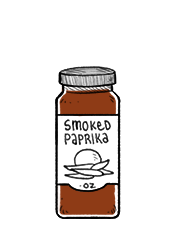smoked paprika
- curry powder
 cumin seeds
cumin seeds- 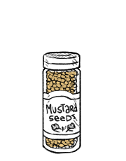mustard seeds
- 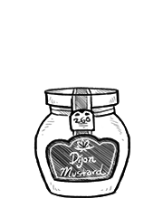dijon mustard
- black pepper
- shichimi togarashi
- garam masala
- 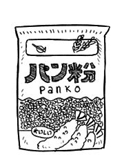panko
- carob
- 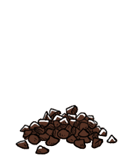carob chips
- bay leaf
- chili pepper flakes
- chili peppers
- hops
- dried orange peel
 oregano
oregano- 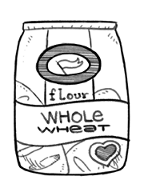whole wheat flour
- buckwheat groats
- buckwheat noodles
- 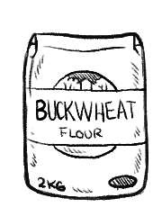buckwheat flour
- einkorn wheat flour
- 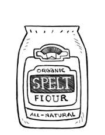spelt flour
- gluten flour
- 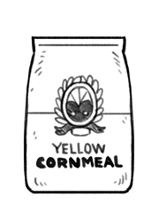cornmeal
- 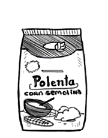corn semolina
- rolled oats
- quick oats
- rice
- 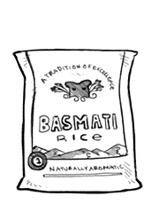basmati rice
- short grain white rice
- puffed rice
- medium grain brown rice
- black glutinous rice
- rice flour
- flour
- all purpose flour
- breadfruit flour
- wheat semolina
- beni shouga
- vegemite
- miso
- red miso
- white miso
- tofu
- soft tofu
- burmese tofu
 prepared veganaise
prepared veganaise- soy sauce
 sriracha
sriracha- mirin
- baking powder
- bamboo charcoal powder
- cornstarch
- active dry yeast
- baking soda
- agar agar powder
- arrowroot starch
- maple syrup
- brown rice syrup
- japanese rice vinegar
- balsamic vinegar
- apple cider vinegar
- matcha powder
- houjicha
- beer
 sake
sake coconut oil
coconut oil- canola oil
- olive oil
- sesame oil
- peppermint oil
- fresh dill
- coconut milk
- soy milk
- baguette
- bread crusts
- vegan butter
- cavatappi
- fusilli
- soy yogurt
- kinako
- corn tortillas
- fleur de sel
- vegetable bouillon
- water
- powdered sugar
- whole cane sugar
- coconut sugar
- brown sugar
- salt
- sea salt
 chocolate chips
chocolate chips- green bell peppers
- yellow bell peppers
- kiwi
- tamarind paste
- gochujang
 oats
oats- red wine
- plantains
- tsubuan
- ume vinegar
- lime
- bosc pear
- red lentils
- fresh bread
- pickled cucumbers
- jalapeno peppers
65 Recipes